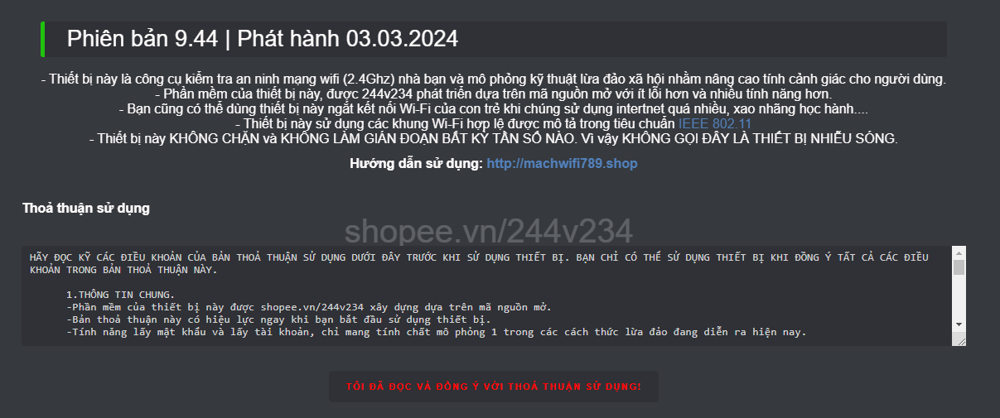
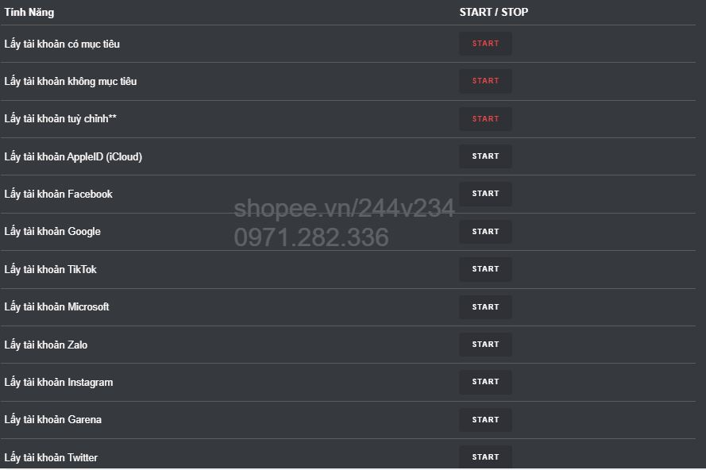
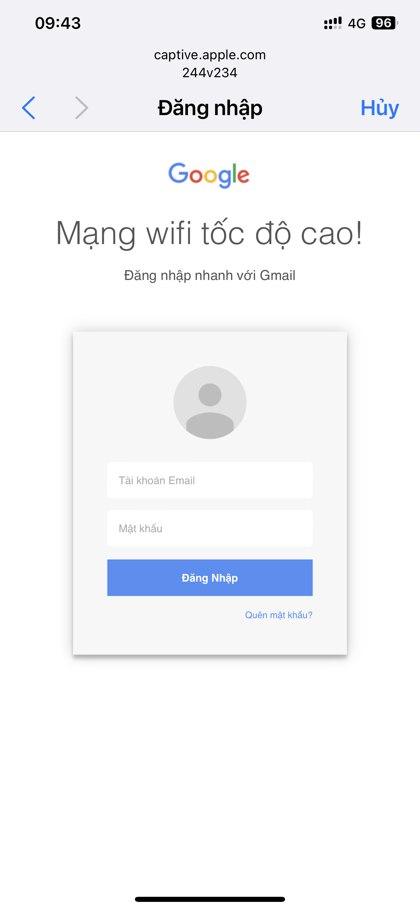
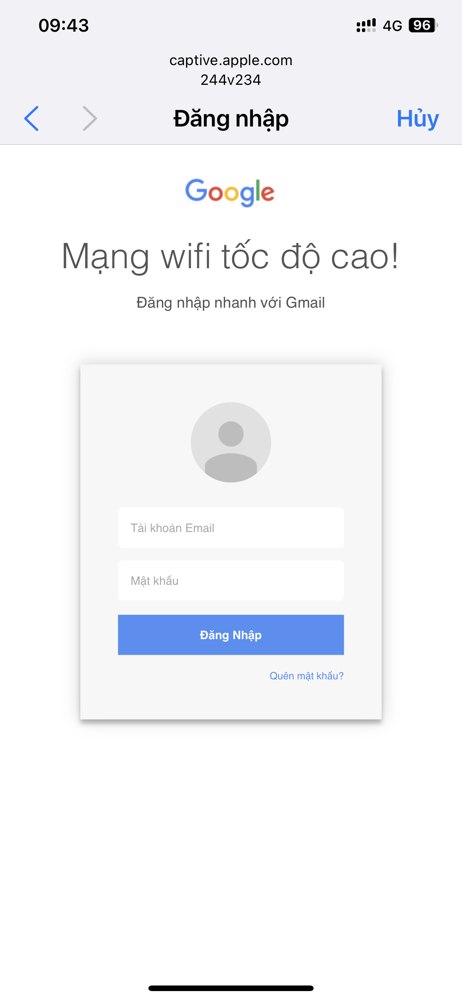
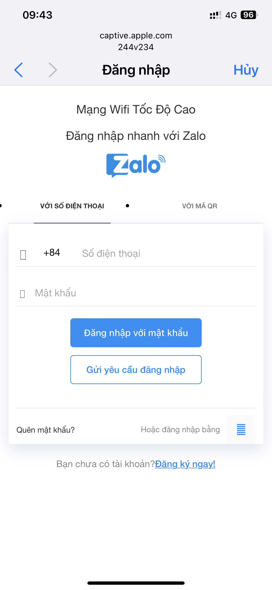

Phiên bản 8.9 | Phát hành 21.05.2023
Quý khách có nhu cầu mua hàng vui lòng bấm vào link => Shopee.vn/244v234
Giới thiệu
- Thiết bị này là công cụ kiểm tra an ninh mạng wifi nhà bạn và mô phỏng kỹ thuật lừa đảo xã hội.
- Bạn cũng có thể sử dụng thiết bị này để hạn chế những người hàng xóm hát karaoke vô ý thức, gây ảnh hưởng đến học tập, sinh hoạt, cũng như giấc ngủ của bạn và gia đình.
- Ngắt kết nối wifi điện thoại, máy tính bảng của con cháu, để hạn chế các cháu chơi game, lên mạng quá nhiều, xao nhãng học hành.
- Với việc áp dụng trí tuệ nhân tạo espAI để phát hiện và bám mục tiêu giúp thiết bị hoạt động hiệu quả hơn rất nhiều.
LƯU Ý: Dưới đây là video giới thiệu tính năng ngắt kết nối và lấy mật khẩu wifi sử dụng Trí tuệ nhân tạo AI.
Video giới thiệu tính năng kích sóng wifi
Video giới thiệu tính năng kích sóng wifi
Video giới thiệu tính năng l*y tài khoản
Video giới thiệu tính năng phiên bản 8.8
Các tính năng chính.
Hướng dẫn sử dụng:
1. Cấp nguồn cho thiết bị bằng sạc dự phòng, hoặc cục sạc điện thoại thông thường.
2. Kết nối với wifi 244v234 do thiết bị phát ra, mật khẩu: abcd1234
3. Sau khi kết nối thành công, mở ứng dụng duyệt web: chrome, safari, firefox,opera...... Sau đó truy cập vào 1.2.3.4(Trong trường hợp bạn truy 1.2.3.4 nhưng không hiện giao diện điều khiển. Vui lòng vào web ở chế độ riêng tư - hay còn gọi là ẩn danh.)

5. Nếu muốn tìm lại các mạng wifi xung quanh, bấm vào “TÌM KIẾM WIFI XUNG QUANH”. Sau đó tích vào các mạng wifi mà bạn muốn "Ngắt kết nối". Sau đó bấm vào mục "Tính Năng"(nếu muốn l*y mật khẩu wifi, bạn chỉ được tích vào 1 mạng duy nhất).

6. Bấm “START” ở tính năng "Ngắt Kết Nối". Lúc này đèn led trên thiết bị sẽ sáng lên. Và những người hát karaoke vô ý thức sẽ bị mất kết nối wifi nhà họ. Sau đó bạn bấm "TẮT WIFI ĐIỀU KHIỂN" để tránh sự nhòm ngó của những người hát karaoke vô ý thức.
Tính năng BÁM THEO 1 MỤC TIÊU ĐÃ CHỌN - BÁM THEO TẤT CẢ CÁC MỤC TIÊU - LẤY MẬT KHẨU WIFI sẽ sử dụng Trí tuệ nhân tạo AI.

7. Nếu bấm "START" ở tính năng "l*y Mật Khẩu", wifi điều khiển 244v234 sẽ biến mất, và sinh ra wifi nhái giống với wifi bạn chọn, để dụ hàng xóm truy cập.
- Nếu hàng xóm không nhập chính xác mật khẩu wifi nhà họ, thì wifi nhà họ sẽ bị ngắt kết nối liên tục.
- Còn nếu hàng xóm nhập chính xác mật khẩu wifi nhà họ, wifi nhái sẽ biến mất. Và lúc này wifi nhà họ sẽ sử dụng được bình thường.
- Nếu bạn muốn xem mật khẩu đã l*y được, bạn rút nguồn ra cắm lại, lúc này wifi điều khiển 244v234 sẽ hiện lên. Bạn truy cập vào giao diện điều khiển, và vào mục "Mật Khẩu Wifi" để xem mật khẩu wifi đã l*y được.
8. Tính năng lấy TK Facebook, Google, Garena, Zalo, TikTok, Instagram chỉ mang tính chất giáo dục. Bạn tuyệt đối không dùng tính năng này cho mục đích xấu.

Giao diện l*y mật khẩu Wifi và tài khoản Facebook, Google, Garena, Zalo, TikTok


Giao diện l*y tài khoản Facebook, Google, Garena
 
 
Giao diện l*y tài khoản Zalo, TikTok, và mật khẩu thu được



Lưu Ý:
- Bạn nên thử với wifi nhà bạn trước, để hiểu cách thức hoạt động của thiết bị.
- Hướng anten của thiết bị về phía nhà hàng xóm.
- Số âm ở cột sóng càng nhỏ (màu xanh lá), thì modem wifi hàng xóm càng gần với bạn.
- 19h - 22h là thời điểm l*y mật khẩu wifi hiệu quả nhất! Vì thời điểm này nhà hàng xóm có nhiều người đang kết nối wifi.
- Cần tư vấn hoặc hỗ trợ vui lòng nhắn tin cho mình Shopee.vn/244v234
Tính Năng Dòng Lệnh
Gõ lệnh:
write autostart.txt scan ap -c 60s "nhấn phím enter"
write autostart.txt attack -da "nhấn phím enter"
Muốn xem autostart.txt đang có nhưng lệnh nào bạn gõ:
print autostart.txt "nhấn phím enter"
Để xem danh sách lệnh, cũng như các ví dụ khác bạn gõ: help "nhấn phím enter"
Muốn xoá kịch bản đã lưu, gõ lệnh: delete tenkichban.txt
Cách phòng tránh:
Vui lòng sử dụng có trách nhiệm, chỉ sử dụng khi thực sự cần thiết!
Hướng Dẫn Nâng Cấp Thủ Công
Những bạn sở hữu phần mềm cũ từ 6.3 | phát hành 21.12.2020 trở về trước, các bạn vui lòng update thủ công theo hướng dẫn dưới đây.
- Driver cho máy tính, tải về tại đây.
- ESP8266Flasher cho Windows x86 (32 bit), tải về tại đây.
- ESP8266Flasher cho Windows x64 (64 bit), tải về tại đây.
- Phần mềm đăng ký key cho thiết bị KeyServerSing.bin, tải về tại đây.